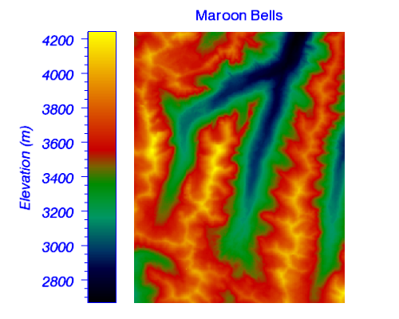

The COLORBAR function adds a colorbar annotation to an existing IDL Graphic.

The following lines create the graphic shown at the top of this topic.
; Import and display Maroon Bells data.
file = FILEPATH('surface.dat', $
SUBDIR=['examples','data'])
data = READ_BINARY(file, DATA_DIMS=[350,450], $
DATA_TYPE=2, ENDIAN='little')
im = IMAGE(data, RGB_TABLE=4, $
POSITION=[0.25,0.05,0.95,0.9], $
FONT_COLOR='Blue', FONT_SIZE=16, $
TITLE='Maroon Bells')
; Add a colorbar
c = COLORBAR(TARGET=im, ORIENTATION=1, $
POSITION=[0.22,0.05,0.29,0.9], $
TITLE='Elevation (m)')
; Change some properties
c.TEXTPOS = 0
c.TICKDIR = 1
c.BORDER_ON = 1
c.COLOR = 'Blue'
c.FONT_STYLE = 'Italic'
c.FONT_SIZE = 16
graphic = COLORBAR( )
The COLORBAR function returns a reference to the created graphic. Use the returned reference to manipulate the graphic after creation by changing properties or calling methods.
None.
Properties marked as (Init) are applied only during the initial creation of the graphic. All other properties can be set during creation, or retrieved or changed after creation.
By default anti-aliasing is used when drawing lines. Set this property to 0 to disable anti-aliasing.
Set this property to display a border around the image portion of the colorbar.
Set this property to a string or RGB vector giving the color of the border and tickmarks of the colorbar. The default is "black".
Set this keyword if the POSITION units are in data coordinates.
Set this keyword if the POSITION units are in device coordinates.
Set this property equal to a string specifying the IDL or system font for the text. The default value is “Helvetica”.
Set this property equal to an integer specifying the font size for the text. The default value is 16 points.
Set this property equal to an integer or a string specifying the font style for the text. Allowed values are:
|
Integer |
String |
Resulting Style |
|
0 |
"Normal" or "rm" |
Default (roman) |
|
1 |
"Bold" or "bf" |
Bold |
|
2 |
"Italic" or "it" |
Italic |
|
3 |
"Bold italic" or "bi" |
Bold italic |
Set this property to 1 to hide the graphic. Set HIDE to 0 to show the graphic.
An integer representing the number of major tick marks. The default value is -1, specifying that IDL will compute the number of tickmarks. Setting MAJOR equal to 0 suppresses major tickmarks entirely.
An integer representing the number of minor tick marks. The default value is -1, specifying that IDL will compute the number of tickmarks. Setting MINOR equal to 0 suppresses minor tickmarks entirely.
A string that specifies the name of the graphic. The name can be used to retrieve the graphic using the brackets array notation. If NAME is not set then a default name is chosen based on the graphic type.
Set this keyword if the POSITION units are in normal coordinates (the default).
Set this property to specify whether the colorbar is displayed horizontally (ORIENTATION=0, the default), or vertically (ORIENTATION=1). Note: Changing the orientation of a colorbar will reset any scaling or rotation that has occurred.
Set this property to set the location of the colorbar. POSITION is specified as a four-element vector: [X1, Y1, X2, Y2], defining the lower left and upper right corners of the image portion of the colorbar. By default the colorbar is centered either underneath (ORIENTATION=0) or on the right side (ORIENTATION=1) of the image.
A floating point scale ratio specifying the length of minor tick marks relative to the length of major tick marks. The default value is 0.5, specifying that the minor tick mark is one-half the length of the major tick mark.
Set this to the visualization to which the colorbar should be associated. If TARGET is not specified any currently selected objects will be used. If the target does not have a color palette then no colorbar will be created.
Set this property equal to the text color. The default value is the same color as the COLOR property.
Set this property to 1 to position the tick labels and axis title above the axis. The default is 0, below the axis.
Tip: The TICKDIR property may be used to control the direction of axis tick marks.
Set this property to a value between 0 and 10 that specifies the line thickness. A thickness of 0 displays a thin hairline on the chosen device. The default value is 1.
Set this property to 1 to draw the tickmarks facing outwards. The default is 0, facing inwards.
Tip: The TEXTPOS property may be used to control the position of tick mark data values and axis titles.
A string, or an array of strings, in which each string represents a format string or the name of a function to be used to format the tick mark labels. If an array is provided, each string corresponds to a level of the axis. See AXIS for a detailed description of this property.
A floating-point number indicating the interval between major tick marks. The default value is computed according to the axis range and the number of major tick marks (MAJOR). If this property is set then the MAJOR property is ignored.
An integer that indicates the tick layout style. Set this property to 0 (the default) to draw the axis line, tick marks, and tick labels. Set to 1 to only draw the labels. Set to 2 to draw a box around the tick labels.
Set this property to set the length of the tickmarks. The default is 0.2.
A string array of up to 30 elements that controls the annotation of each tick mark.
An array of tick mark locations. If TICKVALUES is set to 0 (the default value), IDL computes the tick values based on the axis range and the number of major ticks.
A string representing the title of the axis. You can also add Greek letters and mathematical symbols using a TeX-like syntax. These symbols need to be enclosed within a pair of "$" characters. See Adding Mathematical Symbols and Greek Letters to the Text String for details on the available symbols.
An integer between 0 and 100 that specifies the percent transparency of the colorbar. The default value is 0.
Set this property to an IDL variable of any data type.
This property retrieves a reference to the WINDOW object which contains the graphic.
|
8.0 |
Introduced. |
|
8.1 |
Added the UVALUE property. Added the Delete method. |
IMAGE, SURFACE, Using IDL Graphics, Loading Default Color Tables
COLORBAR COLORBAR COLORBAR COLORBAR COLORBAR COLORBAR COLORBAR COLORBAR COLORBAR COLORBAR COLORBAR COLORBAR COLORBAR COLORBAR COLORBAR COLORBAR COLORBAR COLORBAR